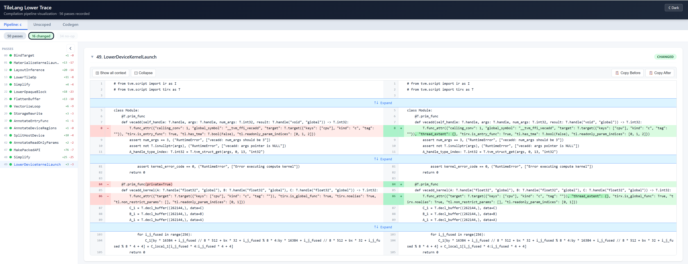

IR Lower Trace¶
IR Lower Trace shows how TileLang’s TIR changes as compiler passes run. It transparently captures the IR before and after every pass in the compilation pipeline — including the final codegen step that produces C/CUDA/HIP source — and renders a human-readable diff report in the terminal and/or a self-contained HTML page. No code changes are required: enabling a single environment variable is enough.
IR Lower Trace is the recommended successor to Pass Diff. Compared with
the older TILELANG_PASS_DIFF tool, it adds:
Phase context — each pass is tagged with its pipeline phase (e.g.
pipeline_c,phase1_...), so you can tell which backend stage a pass belongs to.Codegen capture — the final TIR-to-source lowering is recorded, and the generated C/CUDA/HIP code is dropped to disk for inspection or editing.
Edit-and-recompile workflow — edit the generated codegen source on disk and rerun; your edits are injected back into compilation (with conflict detection).
Multi-run accumulation — repeated compilations in the same process are tagged with
run2_,run3_, … prefixes, so you can diff across runs.Raw
.tirdumps — before/after IR for every pass is written to disk, keyed by phase and pass index.Crash-safe incremental HTML — the report is flushed after every pass, so partial results survive even if the process crashes.
Enhanced HTML report — sidebar pass navigation, status dots, phase tabs,
j/kkeyboard navigation,Shift+Eglobal expand,F7manual alignment, dark/light theme.
Observe the Lowering Pipeline¶
The simplest way to enable IR Lower Trace is to set the TL_LOWER_TRACE
environment variable before running your script:
# HTML report (default when set to 1/on/true/yes)
TL_LOWER_TRACE=1 python3 my_script.py
# Colored diff printed to the terminal only
TL_LOWER_TRACE=terminal python3 my_script.py
# Both terminal output and HTML report
TL_LOWER_TRACE=both python3 my_script.py
# Disabled (default — zero overhead, no patching)
python3 my_script.py
TileLang reads this setting when tilelang is imported and installs a process-
wide hook around TVM pass execution. Setting the variable after importing
TileLang does not enable the hook for that process.
When HTML output is enabled, a stable symlink <script_dir>/report.html is
maintained and points to the latest run’s report. Open it directly in a browser:
# typical location
open tmp/lower_trace_dir/my_script/report.html
Variable |
Description |
Default |
|---|---|---|
|
Enable tracing. Values: |
off |
|
Base output directory for all trace artifacts |
|
Output Directory Structure¶
A single run produces the following layout under TL_LOWER_TRACE_DIR:
<TL_LOWER_TRACE_DIR>/
└── <script_name>/ # derived from sys.argv[0], e.g. "my_script"
├── report.html # symlink → latest run's report
├── codegen.cpp # generated codegen source (editable, see below)
├── codegen.cpp.original # baseline snapshot for edit/recompile workflow
├── codegen.cpp.latest # actual codegen output of the most recent run
└── .run_records/
└── run_<YYYYMMDD_HHMMSS_ffffff>_<pid>/
├── report.html # this run's full report
├── pipeline_c/ # one subdir per phase (example)
│ ├── 00_BindTarget_before.tir
│ ├── 00_BindTarget_after.tir
│ ├── 01_Simplify_before.tir
│ └── 01_Simplify_after.tir
├── phase2_optimize/ # another phase (illustrative)
│ └── ...
├── codegen/
│ ├── 42_codegen_before.tir
│ └── 42_codegen_after.cpp
└── unscoped/ # passes outside any pipeline window
└── ...
Each phase gets its own subdirectory; passes are numbered globally (00_, 01_,
…) so ordering is unambiguous. Codegen records write the after artifact as
.cpp (the generated source), while ordinary passes use .tir for both sides.
Programmatic API¶
For fine-grained control, IR Lower Trace exposes two layers of API.
One-shot: lower_trace()¶
Diff a fixed chain of passes against an IR module without installing any global hook:
from tilelang.tools import lower_trace as lt
from tilelang import tvm
import tilelang.transform as transform
# Diff a single pass
results = lt.lower_trace(func, transform.Simplify(), mode="terminal")
# Diff a named chain, write an HTML report
results = lt.lower_trace(
func,
[
("Annotate", tvm.tirx.transform.AnnotateDeviceRegions()),
("Split", tvm.tirx.transform.SplitHostDevice()),
("ThreadSync", transform.ThreadSync("shared")),
],
mode="both",
html_path="my_diff.html",
)
Parameter |
Description |
Default |
|---|---|---|
|
A |
Required |
|
A single pass, a list of passes, or a list of |
Required |
|
|
|
|
Number of context lines in the unified diff |
|
|
Output path for the HTML report |
|
Returns a list[dict] with one entry per pass step, each containing name,
before_script, after_script, diff_lines, insertions, deletions, and
changed.
Global hook: enable() / disable() / reset()¶
To trace the entire compilation pipeline of a real kernel (what the environment variable does, but programmatically):
from tilelang.tools import lower_trace as lt
# Enable tracing for the rest of the process.
lt.enable(mode="both")
# ... run tilelang.compile() / kernel compilation ...
All three parameters of lt.enable() are optional — mode, trace_dir, and
codegen_output fall back to the TL_LOWER_TRACE / TL_LOWER_TRACE_DIR env
vars (or sensible defaults) when omitted.
Parameter |
Description |
Default |
|---|---|---|
|
Force a trace mode: |
|
|
Base output directory. |
|
|
Path to save the generated codegen source (enables the edit-recompile workflow). Pass |
enable() is idempotent — calling it multiple times is safe.
When to use reset() and disable()¶
Both are optional and only needed in specific scenarios:
Function |
When to call |
What it does |
|---|---|---|
|
Compiling multiple kernels in the same process and you want each kernel’s report to start fresh (instead of accumulating into one combined report) |
Clears collected records while keeping the hook active. Without it, records accumulate across compilations, tagged with |
|
You want to disable tracing for subsequent compilations within the same process (e.g. a long-running service that only traces the first kernel) |
Restores the original |
from tilelang.tools import lower_trace as lt
lt.enable(mode="both")
# First kernel — traced.
kernel1 = tilelang.compile(func_a)
# Optional: clear records so kernel2 gets its own clean report.
# Omit this line if you prefer a combined multi-run report.
lt.reset()
# Second kernel — traced (into a fresh report if lt.reset() was called).
kernel2 = tilelang.compile(func_b)
# Optional: disable tracing for any further compilations.
lt.disable()
Note
If neither lt.reset() nor lt.disable() is called, tracing stays active for
the lifetime of the process and the final HTML report is generated automatically
at exit. This is the simplest workflow and is sufficient for most one-off
scripts.
HTML Report Features¶
The HTML report is a single self-contained file (no external assets) providing:
Sidebar with per-pass navigation, status dots (● changed / ○ no-op / ✕ failed / ◆ codegen), and
+/−line-count statistics. Collapsible and drag-resizable.Phase tabs to filter passes by pipeline phase.
Summary bar with clickable filter badges (changed / failed / codegen).
Side-by-side diff with GitHub-style coloring, word-level inline highlighting, and collapsible context (
↑↓ Expandbuttons reveal hidden equal lines).Keyboard navigation —
j/kto move between passes,Shift+Eto expand/collapse all,F7for Beyond-Compare-style manual alignment.Dark/Light theme toggle persisted via
localStorage.Copy buttons for before/after IR of any pass.
Error boxes — a failed pass shows its exception message alongside the IR before the crash.
{kind=link}

IR Lower Trace HTML report.¶
Codegen Source Capture & Edit-Recompile Workflow¶
When tracing is enabled, the final codegen step (TIR → C/CUDA/HIP/…) is
intercepted. The generated source is written to <script_dir>/codegen.cpp (or
the path passed to codegen_output=), so you can inspect — and even edit — the
code that will actually be compiled.
To support editing the generated code and re-running with your edits applied, IR Lower Trace maintains three cooperating files:
File |
Role |
|---|---|
|
Working copy — user-editable. This is what gets compiled when you rerun. |
|
Baseline — the codegen snapshot the working copy was last synced from. Written only on init or re-sync, never blindly overwritten. |
|
Latest codegen output — the actual output of the most recent run, overwritten every run for diff reference. |
On each run a three-way comparison (baseline / working copy / current codegen output) decides how to proceed:
Situation |
|
|
Action |
Console tag |
|---|---|---|---|---|
No change |
identical |
identical |
Compile with codegen output as-is |
— |
Codegen changed only |
identical |
differs |
Regenerate |
|
User edited only |
differs |
identical |
Inject the working copy ( |
|
Both changed, working == latest |
differs |
differs (working matches latest) |
Advance baseline; use working copy |
|
Both changed, working != latest |
differs |
differs (working differs from latest) |
CONFLICT — back up working copy → |
|
First run (no baseline) |
— |
— |
Initialise |
(init) |
|
— |
— |
Back up pre-existing |
|
Note on
.bakfiles: The backups created byCONFLICTandINIT-BACKUPserve different purposes.INIT-BACKUPpreserves a pre-existingcodegen.cppof unknown origin before the trace tool takes it over.CONFLICTpreserves the user’s edits before a codegen change overwrites them. RecoverCONFLICTedits withdiff codegen.cpp.original.bak codegen.cpp.bak.
Typical Workflow¶
Inspect — Run once with
TL_LOWER_TRACE=1. Opencodegen.cppto read the generated source.Edit — Modify
codegen.cpp(e.g. add aprintf, tweak a loop). Do not touch.original.Rerun — Run again. Because
codegen.cppdiffers from.originalbut codegen output is unchanged, you’ll seePATCHED from …/codegen.cppand your edited source is compiled.Iterate — Keep editing and rerunning. Each run re-injects your working copy.
If codegen itself changes (e.g. you modified the TileLang program) — two outcomes:
If your edits happen to match the new codegen output →
SYNCED(baseline advances, your edits preserved).If both your edits and codegen changed and they differ →
CONFLICT. Your working copy is backed up tocodegen.cpp.bakand the old baseline tocodegen.cpp.original.bak. Recover your edits withdiff codegen.cpp.original.bak codegen.cpp.bak, then re-apply them against the freshly regeneratedcodegen.cpp.
Note
Backend requirements for edit-and-recompile. The edit-and-recompile
workflow requires a source-compiling execution backend — nvrtc, cython, or
cutedsl. These backends use *_without_compile codegen FFIs that produce
source-only modules, then compile the (edited) source string at runtime via
NVRTC / Cython / CuTeDSL.
The default tvm_ffi backend pre-compiles device code to a binary (PTX/hsaco)
from TIR during codegen. When the tvm_ffi backend is active and you edit
codegen.cpp, you’ll see a NOTE message indicating that your edits are
recorded in the trace for diff viewing but were not recompiled. To use
edit-and-recompile, switch to a source-compiling backend:
# For CUDA targets:
tilelang.compile(..., execution_backend="nvrtc")
# For HIP targets:
tilelang.compile(..., execution_backend="cython")
How It Works¶
IR Lower Trace installs three layers of transparent hooks (all via
monkey-patch, restored by disable()):
tvm.ir.transform.Pass.__call__— every pass invocation is intercepted to capturestr(mod)before and after, compute+/−line counts, and append aLowerRecord. Passes that run outside any pipeline window are tagged with theunscopedphase.PassPipeline.lower(new architecture) or phase functions (legacy architecture) — sets the current phase context so passes invoked within a pipeline run are grouped under a label likepipeline_c. Legacy phase functions are discovered via AST scanning (_discover_passes) and bytecode inspection.Codegen FFI (
target.build.tilelang_cuda,…_hip,…_c,…_llvm, etc.) — captures the final TIR → source lowering and drives the three-file edit-recompile workflow described above.
Pass records are appended at runtime (not pre-registered), so conditional
passes that are skipped at runtime — e.g. LetInline when
should_force_let_inline() is False — simply do not appear, leaving no
phantom/skipped slots. The HTML report is flushed incrementally after every
pass (O(n) total cost), so partial results survive even a crash or SIGKILL.
When the same process compiles multiple kernels, each PassPipeline.lower
invocation increments a run counter and tags phases with a run2_, run3_, …
prefix; all records accumulate into a single report so you can compare runs side
by side.
Note
The pipeline hook wraps tvm.ir.transform.Pass.__call__ for the entire
process, so it observes TVM passes outside the immediate tilelang.compile()
call as well. Capturing IR and, in HTML mode, rewriting the report after every
pass adds debugging overhead. Leave the feature disabled for normal builds and
benchmarks.
Choosing an Output Mode¶
Use
terminalfor a small number of passes and immediate feedback.Use
htmlwhen a lowering pipeline produces many changes or you need to compare complete before and after scripts.Use
bothwhen iterating interactively but retaining a shareable report.
IR Lower Trace compares the textual form returned by IRModule.script(). A
textual change is useful evidence about a pass, but it does not by itself
establish a semantic or performance change.
Tips¶
Use
terminalmode for quick checks — the colored diff prints as passes run, so you can see changes in real time.Use
htmlmode for thorough analysis — navigate across many passes, expand hidden context, and copy IR snippets.Combine with
TL_LOWER_TRACE_DIRto direct reports to a specific location, e.g. when running in CI or comparing across runs.The hook captures all passes in the lowering pipeline, including those triggered internally by
tilelang.compile(). This makes it useful for understanding the full compilation flow.If you previously used
TILELANG_PASS_DIFF, switch toTL_LOWER_TRACE— it is a strict superset and is the tool that receives future improvements.